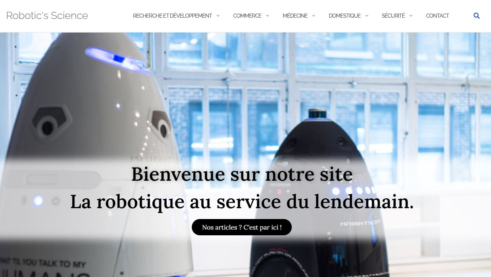

Lors de mon stage de 3ème au sein de l'Agence La Fusée, j'ai développé mon premier site web où je représentais un peu ce que fait l'agence en trois pages distinctes : La création composés de designeuses, la communication composé de chef de projets et le developpement composé d'un développeur back et un développeur front. Vous pouvez retrouver ce site à l'adresse : http://echange.quadrupede.com/marco/ Nous voyons clairement ici que j'étais débutant et que c'était la première fois que je codais car je n'avais pas inclus la balise suivante : meta charset=utf-8 pour l'encodage et la possiblité de faire apparaitre les caractères spéciaux.
MPS Informatique-Seconde

Lors de mon année de seconde, j'ai choisi l'enseignement d'exploration : "MPS informatique" et celui-ci m'a énormément plu car j'ai pu continuer sur la voie du développement web en créant le tout premier site que j'hébergeais sur les serveurs de free. Aujourd'hui, ce site est celui de mon PJS1, et l'adresse est la suivante : http://centpourcentsciences.free.fr/. Mais au cours de cette année, j'ai énormément progressé en HTML/CSS et j'ai même pu toucher au PHP. Et cela m'a énormément plu de pouvoir développer mes propres pages personnels. Après bien sûr, cela se voyait toujours autant que c'était un débutant qui était derrière son ordinateur. Je vous laisse regarder. L'image parle d'elle-même, je mettais tout dans des balises h au lieu de balises p, et ce n'était pas beau à voir.
DUT Informatique
En ce début de DUT informatique, j'ai acquis selon moi un énorme gain en matière de programmation car j'ai pu développer un projet en C qui consistait à gérer une entreprise : déterminer un nombre d'heures pour un travailleur, affecter une tâche à un travailleur, gérer les commandes des clients, réaffecter les tâches au travailleur qui a le moins d'heures, afficher la facture totale des clients. Et cela m'a permis de m'améliorer énormément en C. De plus, j'ai fait la nuit de l'info 2020, mais je n'ai pas réussi à faire ce que je voulais. Voici un extrait de ce qui était demandé :